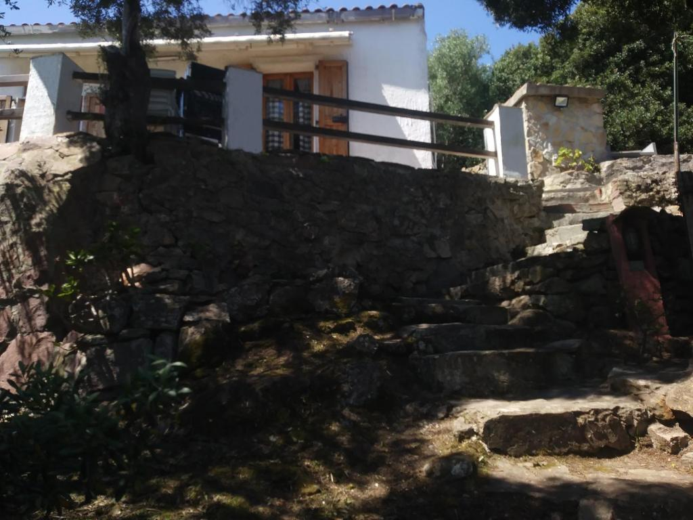

Cà da Marta
Una Casetta Indipendente Immersa nel Verde
La "Cà da Marta" è una piccola casetta indipendente, perfetta per una fuga romantica o una vacanza in totale tranquillità.
Situata in una posizione privilegiata, offre una vista panoramica sul mare, immersa nel verde della natura circostante.
Caratteristiche principali:
- Per due persone: ideale per una coppia in cerca di privacy e relax.
- Terrazzo con vista panoramica: ampio terrazzo dove poter godere della vista sul mare e rilassarsi all'aria aperta.
- Barbecue: per cene all'aperto con il profumo del cibo sulla griglia.
- Interno: la casetta è composta da una zona notte nel soppalco, con un letto matrimoniale, mentre al piano inferiore troviamo una cucina e una zona pranzo.
- Bagno con doccia: un comodo bagno con doccia, per garantirvi il massimo comfort.
- Parcheggio privato: un parcheggio esclusivo per gli ospiti della casetta.
- Posizione: la casetta è situata su una collinetta che offre privacy e una vista unica.
Galleria Immagini
